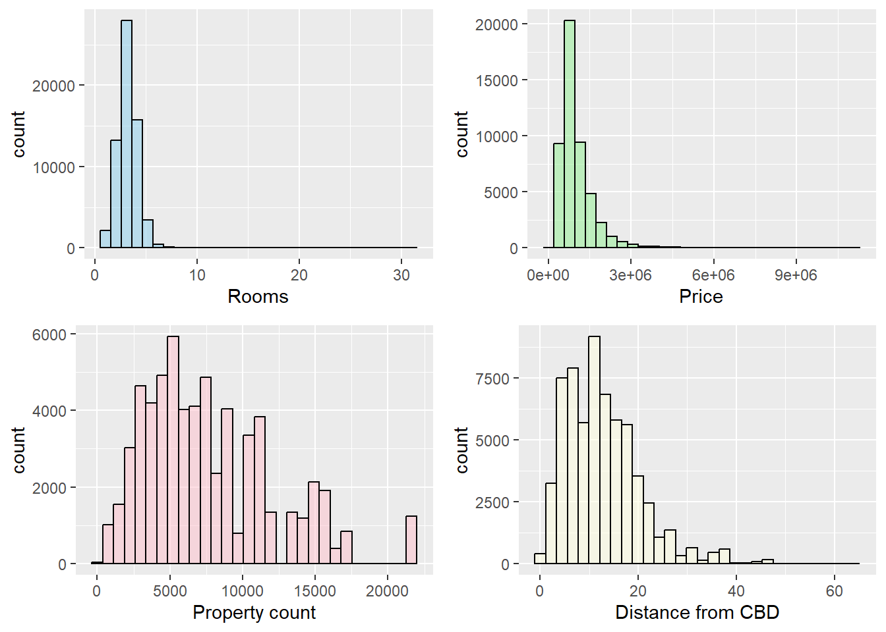
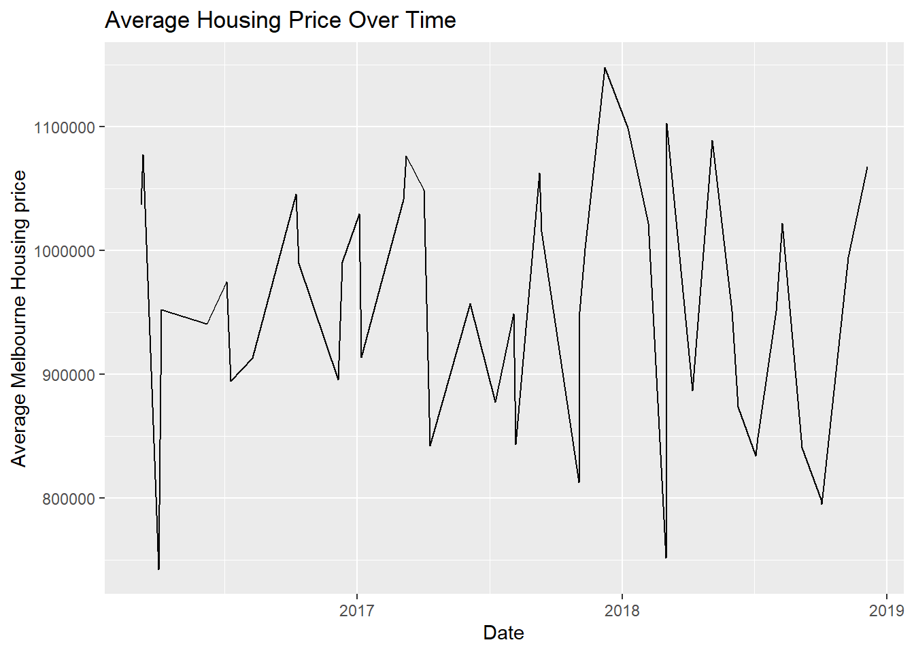
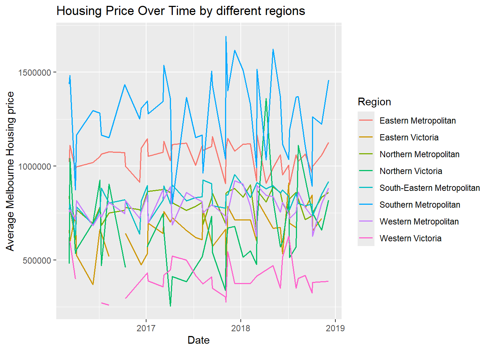
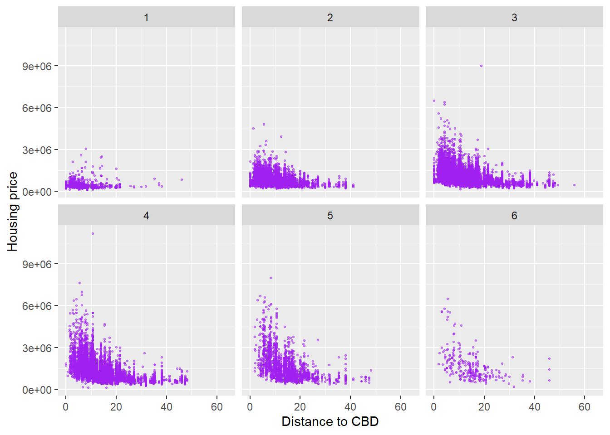
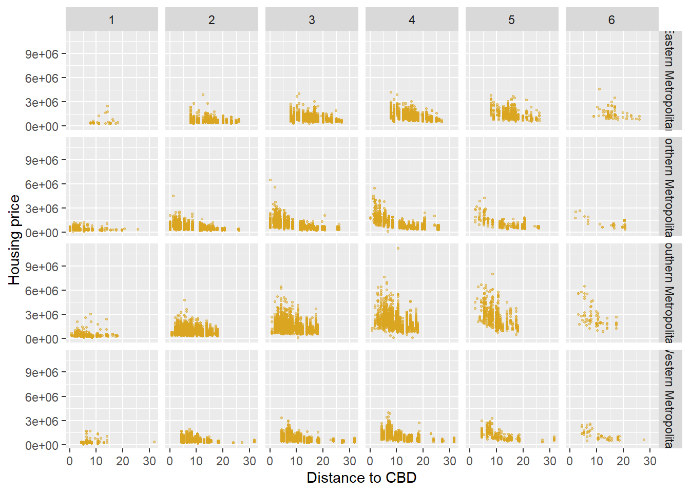

Welcome to the beach city of Melbourne, Australia! For this project let’s take a look at the interesting housing market data. I chose this data set because data contains the date data, which is really good for visulization using an Rshiny App!
I have downloaded the Melbourne housing data from [here] (http://www.kaggle.com/datasets/anthonypino/melbourne-housing-market): . Let’s first import data and make some summaries.
library (dplyr)
Warning: package 'dplyr' was built under R version 4.3.3
Attaching package: 'dplyr'
The following objects are masked from 'package:stats':
filter, lag
The following objects are masked from 'package:base':
intersect, setdiff, setequal, union
library (tidyverse)
Warning: package 'ggplot2' was built under R version 4.3.3
Warning: package 'tidyr' was built under R version 4.3.3
Warning: package 'readr' was built under R version 4.3.3
Warning: package 'stringr' was built under R version 4.3.3
Warning: package 'lubridate' was built under R version 4.3.3
── Conflicts ────────────────────────────────────────── tidyverse_conflicts() ──
✖ dplyr::filter() masks stats::filter()
✖ dplyr::lag() masks stats::lag()
ℹ Use the conflicted package (<http://conflicted.r-lib.org/>) to force all conflicts to become errors
library (ggplot2)library (gridExtra)
Attaching package: 'gridExtra'
The following object is masked from 'package:dplyr':
combine
library (pheatmap)
Warning: package 'pheatmap' was built under R version 4.3.2
Warning: `as.tibble()` was deprecated in tibble 2.0.0.
ℹ Please use `as_tibble()` instead.
ℹ The signature and semantics have changed, see `?as_tibble`.
MelHousing
# A tibble: 63,023 × 13
Suburb Address Rooms Type Price Method SellerG Date Postcode Regionname
<chr> <chr> <int> <chr> <int> <chr> <chr> <chr> <int> <chr>
1 Abbotsf… 49 Lit… 3 h 1490000 S Jellis 1/04… 3067 Northern …
2 Abbotsf… 59A Tu… 3 h 1220000 S Marsha… 1/04… 3067 Northern …
3 Abbotsf… 119B Y… 3 h 1420000 S Nelson 1/04… 3067 Northern …
4 Aberfel… 68 Vid… 3 h 1515000 S Barry 1/04… 3040 Western M…
5 Airport… 92 Cly… 2 h 670000 S Nelson 1/04… 3042 Western M…
6 Airport… 4/32 E… 2 t 530000 S Jellis 1/04… 3042 Western M…
7 Airport… 3/74 H… 2 u 540000 S Barry 1/04… 3042 Western M…
8 Airport… 1/26 H… 3 h 715000 SP Nelson 1/04… 3042 Western M…
9 Albanva… 1 Jack… 6 h NA PI hockin… 1/04… 3021 Western M…
10 Albert … 18 Mil… 3 h 1925000 S Cayzer 1/04… 3206 Southern …
# ℹ 63,013 more rows
# ℹ 3 more variables: Propertycount <int>, Distance <dbl>, CouncilArea <chr>
From the function str(), we could see the data set has about 63k records of housing, with 13 variables. There are 8 categorical variables and 5 quantitative variables. For the categorical variables, some are very interesting. For example, the variable “Regionname” indicates which region a specific housing is seated in, the “Type” variable showed the type of housing.
# A tibble: 3 × 2
TypeF count
<fct> <int>
1 house 45053
2 townhouse 6315
3 duplex 11655
So there are 8 different city area in Melbourn. Among those different regions, the Southern Metropolitan and the Northern Metropolitan clearly had the most number of housing options and there are three different types of housing: house (h), townhouse (t) and duplex (u). How about making a two-way contingency table?
`summarise()` has grouped output by 'RegionF'. You can override using the
`.groups` argument.
TypeF Eastern Metropolitan Eastern Victoria Northern Metropolitan
1 house 8217 540 11984
2 townhouse 914 12 1738
3 duplex 1265 12 3059
Northern Victoria South-Eastern Metropolitan Southern Metropolitan
1 544 3992 10281
2 2 530 2098
3 10 690 5180
Western Metropolitan Western Victoria
1 9266 229
2 1021 NA
3 1430 9
This table lists the number of different types of housing in different district. It is interesting to see not only the number of housing, but how different areas of a city tend to favor a certain type of housing instead of other types. For example the ratio between house and duplex is close to 7:1 in the Eastern metro region, but is close to 2:1 in the southern metro region. The housing type (and probably density) between those two regions must be very different.
`summarise()` has grouped output by 'RegionF'. You can override using the
`.groups` argument.
RoomsF Eastern Metropolitan Eastern Victoria Northern Metropolitan
1 1 43 4 763
2 2 1242 22 4366
3 3 4574 255 7765
4 4 3424 230 3308
5 5 969 45 497
6 6 120 7 59
7 7 14 NA 13
8 8 6 1 5
9 9 1 NA 1
10 10 1 NA 2
11 16 1 NA NA
12 31 1 NA NA
13 11 NA NA 1
14 12 NA NA 1
Northern Victoria South-Eastern Metropolitan Southern Metropolitan
1 3 50 1024
2 13 692 4907
3 270 2669 6322
4 221 1423 4127
5 39 327 1042
6 9 38 107
7 1 6 17
8 NA 4 7
9 NA 1 2
10 NA 1 3
11 NA NA NA
12 NA NA NA
13 NA NA NA
14 NA 1 1
Western Metropolitan Western Victoria
1 223 1
2 1992 14
3 5932 163
4 2963 51
5 509 6
6 82 2
7 10 NA
8 6 NA
9 NA NA
10 NA NA
11 NA NA
12 NA NA
13 NA NA
14 NA 1
The variable “rooms” is a quantitative one, but we could anyway coerce So if we make a 2-way contigency table on “Region” and “Rooms” same thing could be observed here: Dueling units with 1 room only are very rare in the Eastern Metro region (less than 1%), while it constitutes quite a fraction (about 7%) in the Southern Metropolitan region.
Numeric summaries
There are five numeric variables: “Rooms”, “Price”, “Postcode”, “Property count” and “Distance”, while Postcode is not a real “quantitative” variable. Let’s make a summary first on the rest four variables.
To see the distribution of those four variables, including the number of rooms in a house, the price of the house, the property counts of the Suburbs and the houses’ distance from Melbourn CBD, we could make four density plot and put them together.
`stat_bin()` using `bins = 30`. Pick better value with `binwidth`.
`stat_bin()` using `bins = 30`. Pick better value with `binwidth`.
Warning: Removed 14590 rows containing non-finite outside the scale range
(`stat_bin()`).
`stat_bin()` using `bins = 30`. Pick better value with `binwidth`.
`stat_bin()` using `bins = 30`. Pick better value with `binwidth`.

They all look like gamma distribution with different shape and scale paramaters.
Since the dataset has a date data, let’s pick it up and plot a time-series plot on those numeric variables. So it is basically a line plot
MelHousing$Date <-as.Date (MelHousing$Date, format ="%m/%d/%Y")daily_avg_price <- MelHousing |>group_by(Date) |>summarize (price_avg =mean (Price, na.rm =TRUE))ggplot (daily_avg_price, aes (x = Date, y = price_avg)) +geom_line (color ="black") +labs (title ="Average Housing Price Over Time", x ="Date", y ="Average Melbourne Housing price")
Warning: Removed 1 row containing missing values or values outside the scale range
(`geom_line()`).

There is no significant trend in the average price throughout the years. Meanwhile we could plot the same time-plot based on different Region in Melbourne.
`summarise()` has grouped output by 'Date'. You can override using the
`.groups` argument.
ggplot (daily_avg_price, aes (x = Date, y = price_avg, color = RegionF)) +geom_line (size =0.7) +labs (title ="Housing Price Over Time by different regions", x="Date", y ="Average Melbourne Housing price",color ="Region")
Warning: Using `size` aesthetic for lines was deprecated in ggplot2 3.4.0.
ℹ Please use `linewidth` instead.
Warning: Removed 9 rows containing missing values or values outside the scale range
(`geom_line()`).

It would be also very interesting to look at the interplay between housing price and the distance to CBD. Use ggplot to plot the dot plot using x = “Distance” and y = “Price”. In addtion, we could use rooms as a factor to make a facet grid. Note most of the housing units have room number less than or equal to 6
MelHousing_room6 <- MelHousing |>filter (Rooms <=6)ggplot (MelHousing_room6, aes (x = Distance, y = Price)) +geom_point (color ="purple", alpha =0.5, size =0.5) +labs (x ="Distance to CBD", y ="Housing price") +facet_wrap(~Rooms)
Warning: Removed 14549 rows containing missing values or values outside the scale range
(`geom_point()`).

We could see no matter how many rooms, the peak housing price comes at about somewhere around 5 miles to CBD. For this we could add another dimension of facet using facet_grid function.
Warning: Removed 13007 rows containing missing values or values outside the scale range
(`geom_point()`).

It is interesting to see although the housing price in the Eastern and Southern metropolitan areas were similar among housing units with 1-3 bedrooms, southern metro neighbourhoods are much pricier at 4-6 bedroom houses. In fact there is a single house in the south metropolitan area that tops all the prices, which is a 4 bedroom house.
Heatmap for daily price for different region
It is interesting to look at the price changes of housing in different region at different time points. To make a heatmap meaningful, we first need to sort out the average price data for each council area at each time point, and then do normalization.
Now you could see the housing price has been normalized according to the first value of each column to reflect their relative changes. I will continue using the pheatmap () function.
From this heatmap you could roughly see housing price actually followed different trending at different areas. Now make an App to enable end users to visualize our data set!